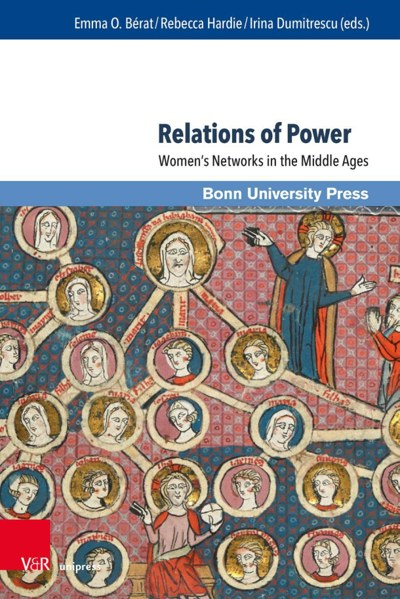
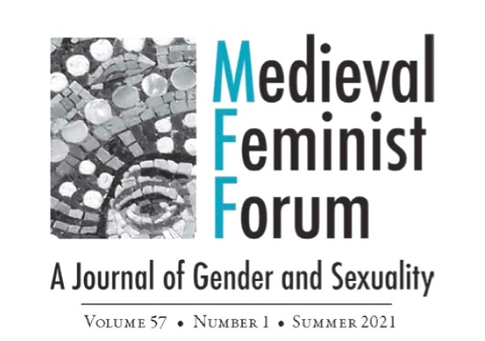
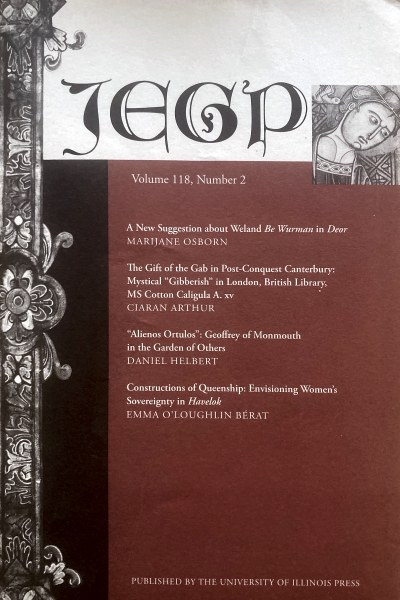
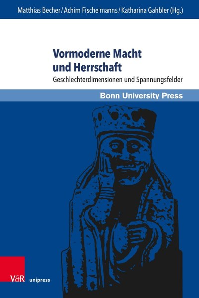
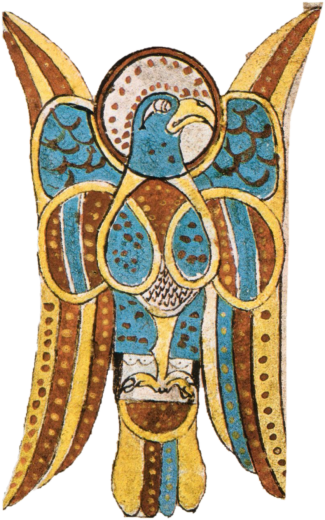

Women’s Genealogies in the Medieval Literary Imagination: Matrilineal Legacies in the High Middle Ages. Cambridge: Cambridge University Press, 2024. Winner of the Royal Studies Journal Biennial Book Prize, 2026.

Relations of Power: Women’s Networks in the Middle Ages. Co-edited with Rebecca Hardie and Irina Dumitrescu. Göttingen: Bonn University Press / V&R unipress, 2021. Reviewed by Marina Warner in the New York Review of Books (“Wimple Networks,” June 23, 2022).

“Everyday Arts: Craft, Labor, Performance.” Special issue of Medieval Feminist Forum 57, no. 1 (2021). Co-edited with Irina Dumitrescu.
“Legendary Ancestors and Women’s Mobile Genealogies: ‘Agatha of Hungary’ in Trevet’s Les Cronicles.” Viator 51, no. 1 (2020): 147–58.
“Women’s Acts of Childbirth and Conquest in English Historical Writing.” Medieval Feminist Forum 57, no. 1 (2021): 142–67.
“Transformative Genealogies: Childbirth and Crises of Succession in Athelston.” Studies in the Age of Chaucer 42 (2020): 183–212.

“Constructions of Queenship: Envisioning Female Sovereignty in Havelok.” Journal of English and Germanic Philology 118, no. 2 (2019): 234–51.
“The Patron and Her Clerk: Multilingualism and Cultural Transition.” New Medieval Literatures 12 (2010): 23–45.

“Women’s Transculturality in Medieval British Genealogies.” In Vormoderne Macht und Herrschaft: Geschlechterdimensionen und Spannungsfelder, edited by Matthias Becher, Achim Fischelmanns, and Katharina Gahbler. Macht und Herrschaft 12. Göttingen: V&R unipress / Bonn University Press, 2021.
I’m slowly but steadily writing two novels.

I AM SAINT tells the story of the early medieval holy woman Osith as she grows from a child to a woman amid early medieval Christianity, paganism, magic, and the natural world. It’s based on the twelfth-century Vie de Saint Osyth.
The Book of Islands is an upper middle-grade novel that follows the adventures of a twelve-year-old heroine as she sails the western Pacific to uncover why her island is sinking. It draws on my experience of sailing around the world full time with my family from age two to eighteen.
Looking for editing support? See my editing services.